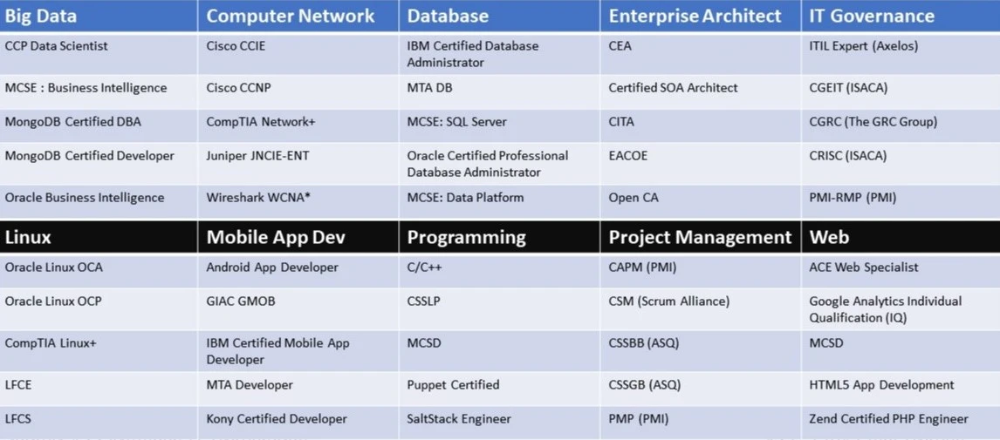

Pada kesempatan kali ini, kita akan membahas tentang sertifikasi IT yang merupakan hal yang sangat penting bagi para profesioanal.
Materi ini saya dapatkan tidak secara tatap muka di Kampus.
Tanpa berlama-lama, langsung kepada pembahasan pada berikut ini.
Sebelumnya apa sih sertifikasi profesi itu?
Sertifikasi profesi adalah sertifikasi kerja yang diperlukan untuk mendapatkan atau meningkatkan kompetensi tertentu.
Istilah Sertifikasi Profesional digunakan untuk menunjukkan kemampuan atau kualifikasi seseorang berdasarkan atribut atau kriteria yang telah ditentukan oleh sebuah organisasi/badan atau lembaga pengembangan.
Sebutan 'sertifikasi' atau 'kualifikasi' tersebut ditetapkan bagi tenaga profesional untuk menjamin kualifikasi dalam melakukan tugas atau pekerjaan tertentu.
Pentingnya Sertifikasi IT
Sebagian besar perusahaan percaya bahwa sertifikasi TI memainkan peran penting dalam proses perekrutan dan sertifikasi TI merupakan alat prediksi yang dapat diandalkan untuk menentukan keberhasilan karyawan.
Ada lima alasan mengapa demikian:
- Sertifikasi membantu perusahaan mengisi posisi yang terbuka
Sertifikasi memudahkan untuk menemukan IT Profesional yang tepat.
Dengan memasukkan sertifikasi IT sebagai requirement dalam lowongan kerja, manajer dapat mengurangi jumlah resume "unqualified" yang masuk.
- Sebagian besar perusahaan memiliki staf IT yang memegang sertifikasi
Penelitian menunjukkan bahwa pekerja yang tersertifikasi lebih percaya diri, lebih berpengetahuan, dapat mencapai kemahiran pekerjaan lebih cepat, dapat diandalkan dan perform di level yang lebih tinggi.
Pengalaman juga menunjukkan bahwa karyawan yang direkrut dengan sertifikasi bekerja lebih cerdas dan bertahan di posisinya lebih lama.
Pada saat ini, hampir separuh dari Organisasi IT telah memiliki IT Profesional yang Certified
- Profesional IT bersertifikat menghasilkan karyawan hebat
Banyak manajer mengakui bahwa staff yang bersertifikasi bekerja lebih terampil, berpenghasilan lebih, dan lebih banyak mendapat pengakuan dibandingkan dengan staff yang tidak bersertifikat.
- Sertifikasi IT semakin penting
Manajer semakin menyadari betapa pentingnya sertifikasi IT.
Sebanyak 94% Manager HR pada tahun 2014 berekspektasi bahwa sertifikasi IT akan tumbuh terus kedepannya.
- Berlatih sendiri tidak cukup
Para manajer setuju bahwa pelamar memerlukan Sertifikasi untuk memvalidasi keahlian anda.
Hal ini penting untuk diuji setelah pelatihan/training untuk mengkonfirmasi ilmu pengetahuan yang didapat.
Manfaat Sertifikasi IT
Bagi individu:
- Sertifikasi IT membuat anda terpisah dari kandidat yang bersaing di pasar kerja yang kompetitif.
- Mendapatkan sertifikasi IT (yang terbaru) membuktikan kemampuan anda saat ini dalam bidang yang perubahannya sangat cepat.
- IT Profesional bersertifikasi mendapatkan gaji yang lebih tinggi daripada yang tidak bersertifikat.
- IT Profesional bersertifikasi mendapatkan rasa hormat dan kredibilitas diantara rekan kerja dan atasan.
- Berkorban waktu dan sumber daya untuk mendapatkan sertifikasi membuktikan dedikasi anda terhadap karir IT anda.
- IT Profesional bersertifikasi mendapatkan akses ke komunitas profesi sejenis dan memungkinkan menghasilkan kerjasama dalam hal pekerjaan.
Bagi bisnis:
- 75% Manajer TI percaya bahwa sertifikasi penting untuk kinerja tim.
- Perusahaan dapat menggunakan sertifikasi IT untuk investasi, mempertahankan dan mempromosikan karyawan yang menjanjikan.
- Sertifikasi IT yang dimiliki karyawan akan meningkatkan keseluruhan kualitas layanan yang ditawarkan kepada pengguna jasa IT.
- Teknisi yang bersertifikat melaksanakan tugas secara lebih konsisten, meningkatkan kehandalan IT dan organisasi.
Jenis-jenis Sertifikasi IT

 Pelanggaran UU ITE
Pelanggaran UU ITE